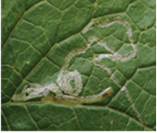
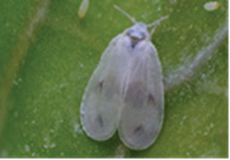
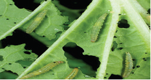

to remove weeds every 2 - 3 weeks. This helps to keep the field clean and healthy for the crop plants.
Management of insect pests and diseases
Insects and diseases in Chinese cabbage can cause serious damage. The common insect pests and diseases and their management practices are presented in Figures 6.3 to 6.8 and 6.9 to 6.10 respectively.
Leaf miners
What they do: Feed on leaves. How to know them: Look for mines on leaves (refer to Figure 6.3). How to manage them: Rotate crops and use bio-based pesticides.

Whiteflies
What they do: Suck sap from leaves. How to know them: Look for flies that leave honeydew on leaves (refer to Figure 6.4). How to manage them: Pick them up, encourage natural enemies, and use recommended insecticides.

Diamondback moths (DBM)
What they do: Feed on leaves. How to know them: Look for moth pupae and larvae on leaves (refer to Figure 6.5). How to manage them: Use bio-pesticides and recommended insecticides.
